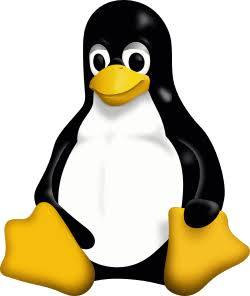
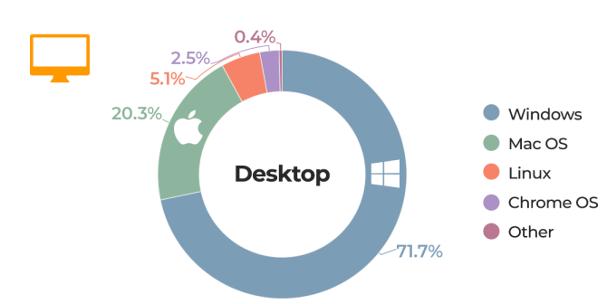

Terrazzino Ian Luca

En esta pagina vamos a hablar de las principales diferencias entre Windows y Linux y la competencia que hay entre los mismos.
Windows es un sistema operativo desarrollado por la empresa Microsoft. Es el programa principal que permite administrar el hardware de una computadora (procesador, memoria, disco duro) y ejecutar aplicaciones como navegadores web, juegos y herramientas de trabajo.
Antes de su lanzamiento oficial en 1985, el proyecto de Microsoft no se llamaba Windows. Bill Gates tenia la intencion de comercializar el sistema bajo el nombre tecnico de Interface Manager(Administrador de interfaz). Fue Rowland Hanson, el jefe de marketing de la compañia en ese momento, quien convencio a gates de cambiar el nombre a "Windows"(Ventanas), argumentando que era un termino mucho mas sencillo, intuitivo y facil de recordar para el usuario promedio.
La famosa imagen del paisaje de colinas verdes y cielo azul que venía por defecto en Windows XP no es un diseño digital ni una ilustración en 3D, sino una fotografía real. Fue tomada en 1996 por el fotógrafo Charles O'Rear en el condado de Sonoma, California. O'Rear tomó la foto con una cámara de formato medio mientras conducía para visitar a su novia. Microsoft compró los derechos de la imagen por una cifra astronómica no revelada (considerada una de las fotografías mejor pagadas de la historia) y la utilizó sin modificaciones digitales significativas.
Hoy en dia Windows se gano el trono del mundo de las computadoras por su facilidad de uso, funciona con casi cualquier programa o dispositivo que se le conecte, y tiene una historia curiosa detras.
Pero en este mundo de las computadoras no existe unicamente Windows. La competencia esta en juego ya que hay otro gigante que viene ganando bastante popularidad estos ultimos años, llamado Linux. En la siguiente seccion pasaremos a hablar del mismo.
Windows es el gigante de los sistemas operativos de computadoras de escritorio, pero, tiene un defecto y es su precio, por esto Linux viene ganando bastante popularidad hace años, ya que Linux es un sistema operativo completamente gratuito y de codigo abierto.
Linux es un sistema operativo (o mas tecnicamente, el Kernel que hace funcionar una computadora).
A diferencia de Windows, que es un sistema operativo cerrado y elaborado por una sola empresa, linux no viene en una sola presentacion. Se organiza y distribuye por distribuciones o "distros" (como Ubuntu, Linux Mint, Fedora o Arch), que son versiones armadas por distintas comunidades, empresas o programadores con tiempo libre utilizando ese nucleo como base.
| Característica | Windows | Linux |
|---|---|---|
| Desarrollador | Microsoft (Empresa privada). | Comunidad global / Empresas (Colaborativo). |
| Código | Propietario / Cerrado. | Código Abierto (Open Source). |
| Costo | De pago (requiere licencia). | Gratuito y libre. |
| Interfaz | Muy intuitiva y estandarizada. | Altamente personalizable. |
| Instalación | Archivos ejecutables (.exe, .msi). | Gestores de paquetes y tiendas. |
| Seguridad | Más propenso a malware (requiere antivirus). | Mayor seguridad nativa. |
| Rendimiento | Exigente con el hardware moderno. | Muy ligero y eficiente en equipos antiguos. |
| Mascota | Ventanas / Bliss. | Tux, el pingüino. |
